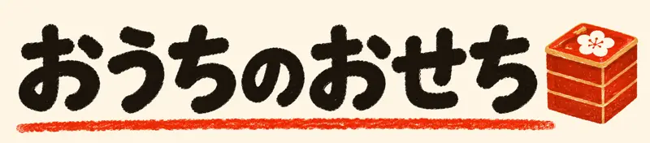

30秒予告
音楽とクレジット
「春の海」作曲・宮城道雄。編曲・フルートはAlexander Gagarin、演奏はZhukovsky Symphony Orchestra、指揮はKonstantin Naumenko。2020年2月16日の録音から30秒を抜粋し、フェードを加えました。

「春の海」作曲・宮城道雄。編曲・フルートはAlexander Gagarin、演奏はZhukovsky Symphony Orchestra、指揮はKonstantin Naumenko。2020年2月16日の録音から30秒を抜粋し、フェードを加えました。